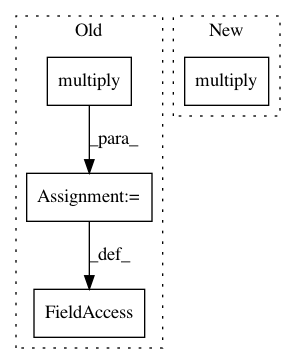

6a59beab725c9390146b16df00ea285a61ea87a6,examples/deep_fqi_atari/extractor.py,Extractor,_build,#Extractor#Any#,111
Before Change
self._n_features,
activation=tf.nn.relu,
name="features_action")
state_x_action = tf.multiply(features_state, features_action,
name="state_x_action")
self._features = tf.layers.dense(state_x_action,
self._n_features,
activation=tf.nn.relu,
name="features")
else:
self._features = features_state
hidden_5_flat = tf.layers.dense(self._features,
400,
activation=tf.nn.relu,
name="hidden_5_flat")
hidden_5_conv = tf.reshape(hidden_5_flat, [-1, 5, 5, 16],
name="hidden_5_conv")
hidden_5 = tf.layers.conv2d_transpose(
hidden_5_conv, 64, 3, 1, activation=tf.nn.relu,
kernel_initializer=tf.glorot_uniform_initializer(),
name="hidden_5"
)
hidden_6 = tf.layers.conv2d_transpose(
hidden_5, 64, 3, 1, activation=tf.nn.relu,
kernel_initializer=tf.glorot_uniform_initializer(),
name="hidden_6"
)
hidden_7 = tf.layers.conv2d_transpose(
hidden_6, 32, 4, 2, activation=tf.nn.relu,
kernel_initializer=tf.glorot_uniform_initializer(),
name="hidden_7"
)
if self._predict_next_frame:
output_kernels = 1
else:
output_kernels = 4
self._predicted_frame = tf.layers.conv2d_transpose(
hidden_7, output_kernels, 8, 4, activation=tf.nn.sigmoid,
kernel_initializer=tf.glorot_uniform_initializer(),
name="predicted_frame_conv"
)
if self._predict_next_frame:
self._predicted_frame = tf.reshape(
self._predicted_frame,
shape=[-1, convnet_pars["height"], convnet_pars["width"]],
name="predicted_frame"
)
if self._predict_next_frame:
self._target_frame = tf.placeholder(
"float32",
shape=[None,
convnet_pars["height"],
convnet_pars["width"]],
name="target_frame")
else:
self._target_frame = tf.placeholder(
"float32",
shape=[None,
convnet_pars["height"],
convnet_pars["width"],
convnet_pars["history_length"]],
name="target_frame")
if self._predict_reward or self._predict_absorbing:
hidden_9 = tf.layers.dense(
self._features,
128,
tf.nn.relu,
kernel_initializer=tf.glorot_uniform_initializer(),
name="hidden_9"
)
hidden_10 = tf.layers.dense(
hidden_9,
64,
tf.nn.relu,
kernel_initializer=tf.glorot_uniform_initializer(),
name="hidden_10"
)
if self._predict_reward:
self._target_reward = tf.placeholder(tf.int32,
shape=[None, 1],
name="target_reward")
self._target_reward_class = tf.clip_by_value(
self._target_reward, -1, 1,
name="target_reward_clipping") + 1
self._predicted_reward = tf.layers.dense(
hidden_10, 3, tf.nn.sigmoid, name="predicted_reward")
predicted_reward = tf.clip_by_value(
self._predicted_reward,
1e-7,
1 - 1e-7,
name="predicted_reward_clipping"
)
predicted_reward_logits = tf.log(
predicted_reward / (1 - predicted_reward),
name="predicted_reward_logits"
)
self._xent_reward = tf.reduce_mean(
tf.nn.sparse_softmax_cross_entropy_with_logits(
labels=tf.squeeze(self._target_reward_class),
logits=predicted_reward_logits,
name="sparse_softmax_cross_entropy_reward"
),
name="xent_reward"
)
if self._predict_absorbing:
self._target_absorbing = tf.placeholder(
tf.float32, shape=[None, 1], name="target_absorbing")
self._predicted_absorbing = tf.layers.dense(
hidden_10, 1, tf.nn.sigmoid, name="predicted_absorbing")
predicted_absorbing = tf.clip_by_value(
self._predicted_absorbing,
1e-7,
1 - 1e-7,
name="predicted_absorbing_clipping"
)
predicted_absorbing_logits = tf.log(
predicted_absorbing / (1 - predicted_absorbing),
name="predicted_absorbing_logits")
self._xent_absorbing = tf.reduce_mean(
tf.nn.sigmoid_cross_entropy_with_logits(
labels=tf.squeeze(self._target_absorbing),
logits=predicted_absorbing_logits,
name="sigmoid_cross_entropy_absorbing"
),
name="xent_absorbing"
)
predicted_frame = tf.clip_by_value(self._predicted_frame,
1e-7,
1 - 1e-7,
name="predicted_frame_clipping")
predicted_frame_logits = tf.log(
predicted_frame / (1 - predicted_frame),
name="predicted_frame_logits"
)
self._xent_frame = tf.reduce_mean(
tf.nn.sigmoid_cross_entropy_with_logits(
labels=self._target_frame,
logits=predicted_frame_logits,
name="sigmoid_cross_entropy_frame"
),
name="xent_frame"
)
self._xent = self._xent_frame
if self._predict_reward:
self._xent += self._xent_reward
if self._predict_absorbing:
self._xent += self._xent_absorbing
if self._contractive:
raise NotImplementedError
else:
After Change
self._n_features,
activation=tf.nn.relu,
name="features_action")
self._features = tf.multiply(features_state, features_action,
name="state_x_action")
else:
self._features = features_state
hidden_5_flat = tf.layers.dense(self._features,
400,
In pattern: SUPERPATTERN
Frequency: 3
Non-data size: 4
Instances
Project Name: AIRLab-POLIMI/mushroom
Commit Name: 6a59beab725c9390146b16df00ea285a61ea87a6
Time: 2017-09-26
Author: carloderamo@gmail.com
File Name: examples/deep_fqi_atari/extractor.py
Class Name: Extractor
Method Name: _build
Project Name: AIRLab-POLIMI/mushroom
Commit Name: c7fbfede10a8c09e5730a4c70ed2644012193b5c
Time: 2017-10-02
Author: carloderamo@gmail.com
File Name: examples/deep_fqi_atari/extractor.py
Class Name: Extractor
Method Name: _build
Project Name: bulik/ldsc
Commit Name: edcd60f9853ba2fabdcc13164230ef8454773dd1
Time: 2014-12-08
Author: hilaryfinucane@gmail.com
File Name: ldscore/jackknife.py
Class Name: Hsq
Method Name: __init__